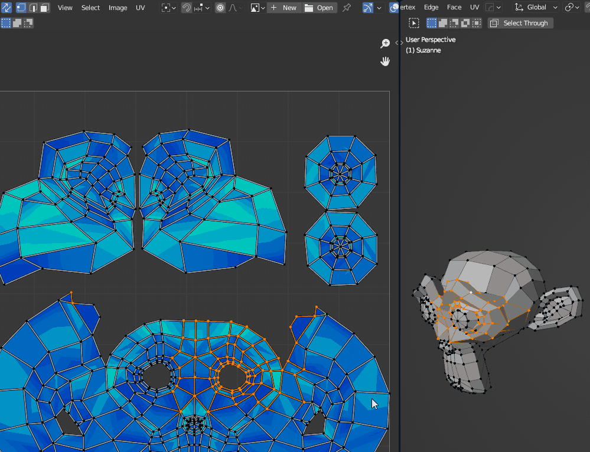

UV
Faster UV editing: smarter sync selection and a Maya-style cut.
UV Tools
Preference: UV Tools
Enables the UV shortcuts below. The extra UV operators (Unwrap in Place, Quick Pack, Unwrap Selected, Isolate Island, Orient Island to Edge, Sharp from UV Islands, Seam by Angle) are available from the UV Pies and Utility Pie (experimental), and Sharp from UV Islands is also in the Toolkit Modifiers section.
Smart UV Sync
RMBUV EditorRight-click in the UV Editor toggles UV Sync Selection and keeps your selection and selection mode. Blender's own toggle loses or changes them.


UV Cut
X · Shift XUV EditorMaya-style UV cut: marks the selected UV edges as seams and splits them.
| Shortcut | Action |
|---|---|
| X | Cut, then pick the island under the mouse and move it |
| Shift X | Cut only |
UV Cut needs UV Sync Selection off. If sync is on, it switches sync off and changes to edge mode. Select the edges and press the key again.
Remove Seam
Alt 2Edit ModeClears seams and sharp edges from the selected edges in one key.